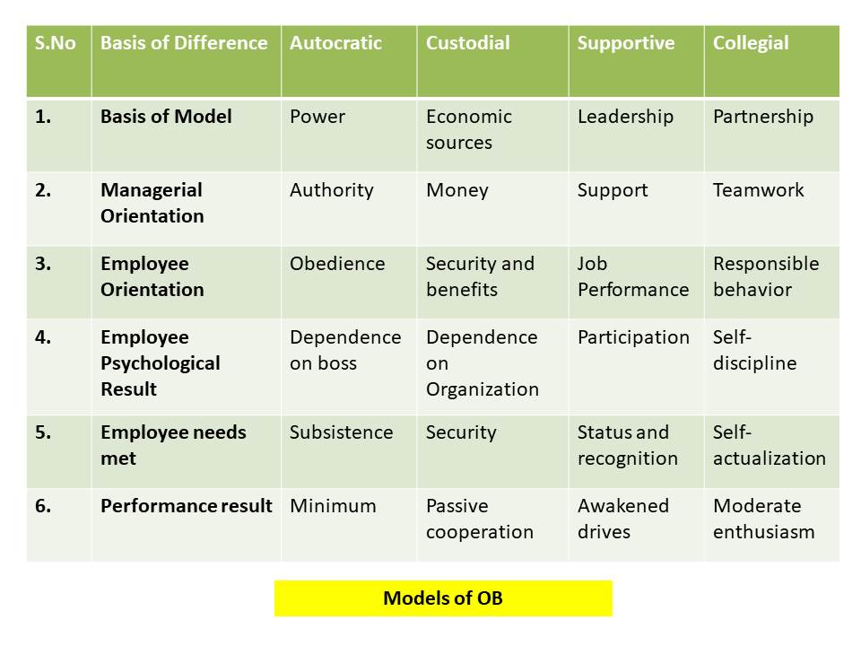

Organizational Behavior
Organizational Behavior(OB) is combination of two words:
Organization: Organization means a unit in which two or more than two persons work jointly for the
attainment of an objective. For Example: a club, a school etc.
Behavior : Behavior means action and reaction of an individual and a group towards their activities.
For Example: a person is happy on getting assignment.
Organizational Behavior simply is a process of studying and understanding the behavior of individual in the Organization.
"Communication is a process of passing information and Understanding from one person to another."
| Table Of Content | |
|---|---|
Concept of Organizational Behaviour
OB is a field to study that invetigates the impact that is a field of study that investigates the impact that individuals, group and structure have a behavior with in Organizations, for the purpose of applying such knowledge towards improving an Organization's effectiveness.
LEVEL OF ANALYSIS
-
Individual Level: At the individual level of analysis, Organizational behavior
includes learning, perception, stress, personality, individual Differences etc.
-
Group Level:At the group level of analysis, Organizational behavior includes
the study of group gesture, intra-group gesture and intergroup dispute and attachment.
-
Organizational Level: At this level of analysis, Organizational behavior
includes the study of organizational culture, Structure, cultural diversity,
inter-Organizational cooperation and coordination.
ELEMENTS OF OB
-
People: The individual is the centeral theme of OB.
Group : Group exists in organization can be small and large, official and informal. They are
dynamics in nature. OB studies the groups in Organization.
-
Organization Structure:Every organisation has an structure aims to establish
the relation between people and organization. People play different roles in organization
and they have different relation with each other. OB is the study of these relations.
-
Environment: External environment affects the organization through
developments, political activities social and cultural influences and government actions.
-
Technology: Technological changes influences the work and working conditions.
If affects the behavior of people in organization.
Group : Group exists in organization can be small and large, official and informal. They are dynamics in nature. OB studies the groups in Organization.
IMPORTANCE OF OB
The need and important of organizational behavior are as under:
- Skill Improvement : Study of Organizational Behavior helps to improve skills. This includes the ability of employees and use of knowledge to become more effecient.
- Understanding consumer Buying Behavior:It also an important part to improve the marketing process by understanding consumer buying behavior.
- Employee Motivation : Organizational Behavior helps to understand the basis of Motivation and different ways to motivate employees properly.
-
Nature of Employees : Understanding of personnel and employee nature is
important to manage them properly. with the help of OB, we can understand whether employee
or people are-
- Introvert
- Extrovert
- Motivated
- Dominating
- Efficiency & Effectiveness: Study of Organisational behavior helps to increase efficiency and effectiveness of the organisation.
- Better Environment of Organisation : OB helps to create a healthy, ethical and smooth environment in an Organisation.
- Optimum Utilization of Resources: Study of OB helps to understand employee and their work style and skill better way. By Understanding this, management can train and motivate employees for optimum utilization of resources.
- Goodwill of Organisation: Organisational Behavior helps to improve Goodwill of Organization.
CHARACTERISTICS OF OB
-
Intergral part of Management : OB is termed as an important part of the whole
management system. It concerned with under standing the human behavior of those working with
the Organisation.
-
Field of Study :That Investigates the impact that individuals group structure
have on behavior with the Organisation.
-
Goal Oriented: OB is Goal Oriented and action-Oriented field of study. Its main
aim is to manage the organisation affairs to achieve the goals of organisation timely.
-
Analysis of Behavior: There are different level Analysis which are performed by
organization behavior. OB perform analysis at 3 level to understand the behavior: Indiviual,
group and organizational level behavior.
-
Both Science and Art: It implies performing several Researches and collecting
data systematically Regarding behavior. The collected information is then used to control
and manage problem in the Organization.
-
Human Tools: OB use as human tool to analysis the human Behavior.
Models of OB
- Autocratic Model: "This Model relies on POWER."
for example, managers have the ability,authority to control employees and the employee's performance in this stage will be much lower than expected.
- Depends on power
- Managerial Orientation is authority
- Employee oriented is obedience
- Employee psychological result depends on boss
- Employee need met is subsistence
- Perfomance reult is minimum
- Custodial Model :"This model usually depends on economic resources(money)."
For instance, manager can simulate their employees by offering them facilities, and benifits, but in this model the employee's won't work as a team (Less sharing with others) because everyone will depend on his self to get more benefits than the others.
- Depends on economical resource
- Mangerial orientation is money
- Employee orientation is security and benefit
- Employee psychological result depend on organization
- Employee needs met is security
- Performance result is passive cooperation
- Supportive Model : "This model relies on leadership."
For Example, managers support their employees by encouraging, and supporting them a better job, get along with each other and as well as developing their skills. The performance reults will be awakened drives.
- Depends on leadership
- Managerial orientation is support
- Employee orientation is job and performance
- Employee pyschological result is participation
- Employee needs met is status and recognition
- Performance result is awakened drives
- Collegial Model : "Employees depend on each other cooperatively and work as a
team to do the task."
Everyone will be having a normal enthusiasm self-discipline and responsible behavior towards their tasks.
- Depends on partnership
- Managerial orientation is teamwork
- Employee orientation is responsible behavior
- Employee pyschological result is self discipline
- Employee needs met is self actualization
- Performance result is moderate enthusiasm
OB Relationship with other fields
Organizational Behavior is an interdisciplinary approach as it has borrowed concepts, theories, models and practices of physical science as well as social sciences. The main features of OB are primarily based on behavioural sciences.
- Pyschology : The term 'psychology' is derived from Greek world 'Psyche' which mean 'soul' or 'spirit'. OB studies the human behavior which is concerned mainly with the psychology of the people, Psychology, especially, industrial or Organisational behavior.
- Sociology : Sociology also has a major impact on the stody of OB. Sociology makes use of scientific methods in accumulating knowledge about the Social behaviour of the group.
- Anthropology :Anthropology is concerned with the interactions between people and thier environment, especially their cultural environment. Culture is a major influence on the structure of organisation as well as on the behaviour of people within organizations.
- Political Science : In recent times, political science has also started interesting the Organisational behaviourists. Political science is usually, thought of as the study of political system.
- Economics : Economists study the production, distribution and consumption of goods and services. Students of OB share the economist's interest in such area as labour market dynamics, productivity, human resource planning and forecasting.
- Science : Science is systematized Knowledge. The scientific nethods to attempt to produce information that is objective in the sense that it is certifiable and independent of persom's opinions or perferences.
- Technology : The level of technological development affect the behaviour of the employees. Modern age is the age of computation.
- Engineering : Engineering also influences the study of OB. some topics are common to engineering as well as organizational behaviour e.g. work measurement, productivity measurement, work flow analysis, work design and labour relation.
- Medicine : Nowadays, medicine has also come in connection with the study of human behaviour at work. Stress is becoming problem in the organisation as well as in the people working in the organisations.